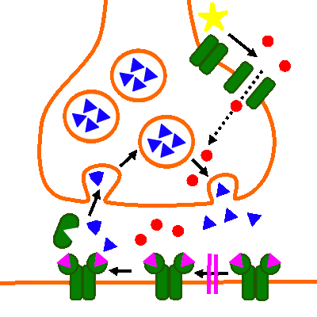
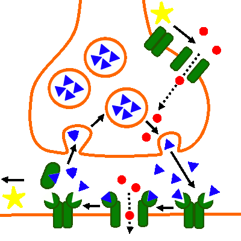

Erregungsübertragung (chemisch): Drogen- und Giftwirkung
Curare

Abb. 1: Wirkung von Curare
- Acetylcholin wird zwar in den synaptischen Spalt ausgeschüttet, die transmitterabhängigen Natriumionenkanäle sind aber im geschlossenen Zustand durch Curare blockert.
- Alle folgenden Schritte unterbleiben. Es findet keine oder nur eine stark verrringerte Erregungsübertragung statt.

Abb. 2: Zum Vergleich: Normaler Erregungsübertragungszyklus
Externe Links
Curare